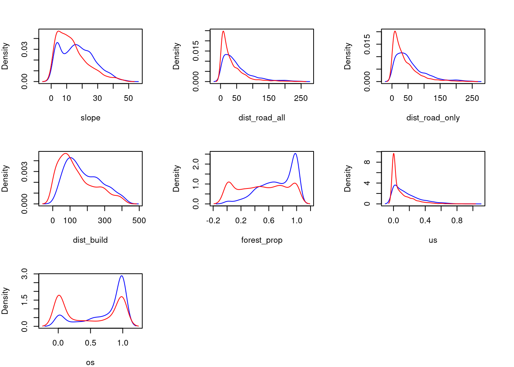
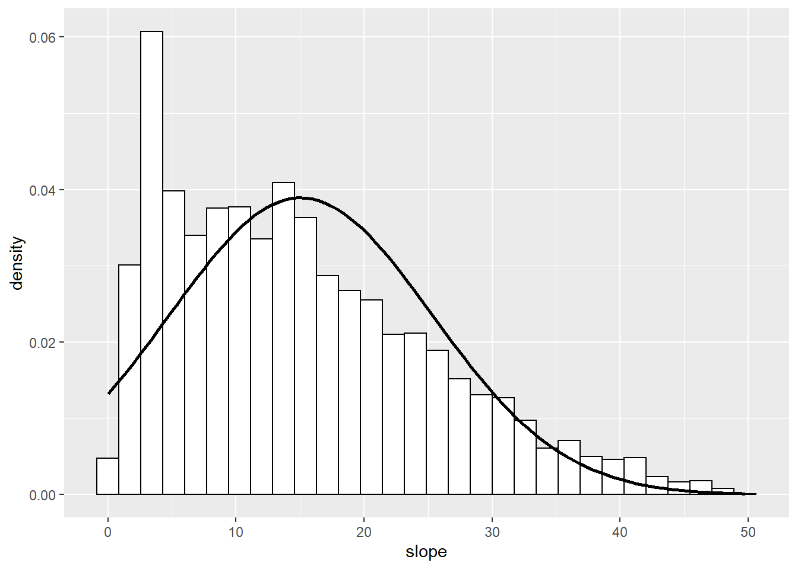
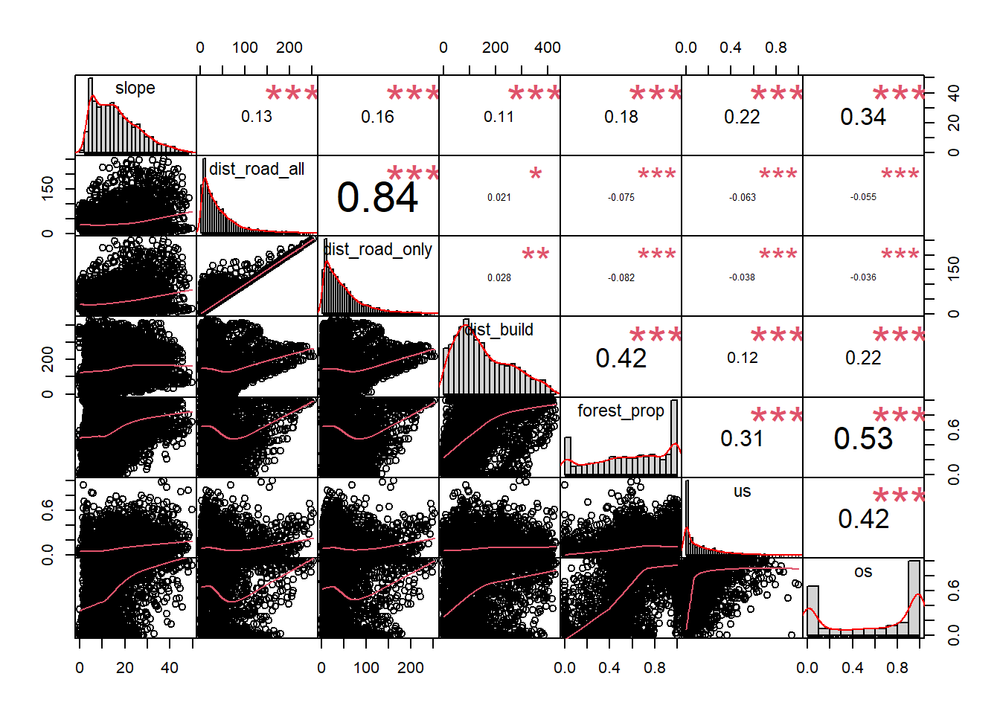
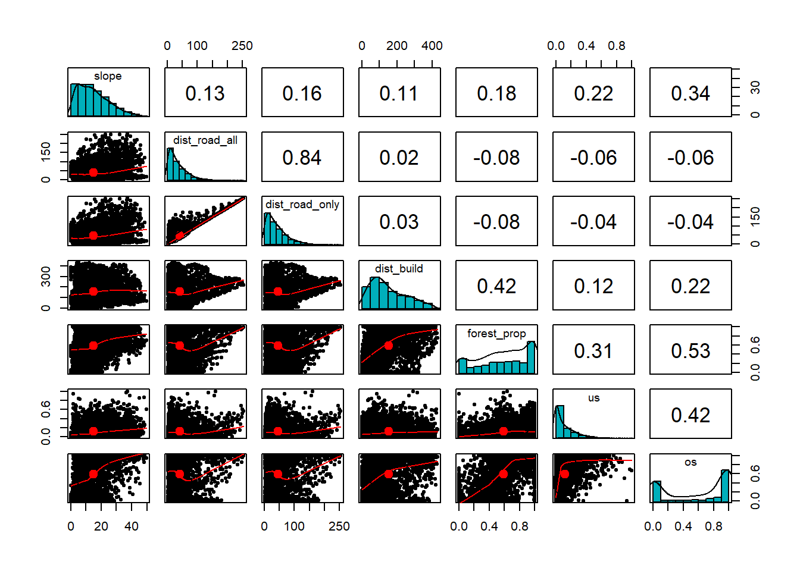

4. Lösung
Einstieg Habitatselektionsmodell / Multivariate Modelle
libraries laden
### Funktion um Packages direkt zu installieren und / oder zu laden
ipak <- function(pkg){
new.pkg <- pkg[!(pkg %in% installed.packages()[, "Package"])]
if (length(new.pkg))
install.packages(new.pkg, repos = "http://cran.us.r-project.org", dependencies = TRUE)
sapply(pkg, require, character.only = TRUE)
}
packages <- c("tidyverse", "PerformanceAnalytics", "pastecs", "psych", "car")
ipak(packages)Aufgabe 1: Einlesen des Gesamtdatensatzes von Moodle
- Sichtung des Datensatzes und der Datentypen
- Kontrolle wieviele Rehe in diesem Datensatz enthalten sind
DF_mod <- read_delim(here("data","Aufgabe4_Datensatz_Habitatnutzung_Modelle_20211101_moodle.csv"),
delim = ";")
str(DF_mod)spec_tbl_df [8,370 × 16] (S3: spec_tbl_df/tbl_df/tbl/data.frame)
$ pres_abs : num [1:8370] 0 1 0 1 1 1 1 1 1 0 ...
$ nmb : num [1:8370] 0 1 0 1 3 1 5 8 2 0 ...
$ x : num [1:8370] 682250 682250 682225 682225 682225 ...
$ y : num [1:8370] 237725 237750 237700 237725 237750 ...
$ forest : num [1:8370] 0 0 0 0 0 0 0 0 0 0 ...
$ slope : num [1:8370] 10.15 9.97 8.85 10.33 12.66 ...
$ dist_road_all : num [1:8370] 60.3 56.3 53.1 68.5 50.2 ...
$ dist_road_only : num [1:8370] 60.3 56.3 53.1 68.5 50.2 ...
$ dist_build : num [1:8370] 36.16 12.24 57.51 32.52 7.86 ...
$ forest_prop : num [1:8370] 0.022246 0.000931 0.018563 0.000824 0 ...
$ us : num [1:8370] 0 0.0218 0 0 0 ...
$ os : num [1:8370] 0 0.06744 0 0 0.00406 ...
$ GPStot : num [1:8370] 420 420 420 420 420 420 420 420 420 420 ...
$ id : chr [1:8370] "RE03" "RE03" "RE03" "RE03" ...
$ time_of_day : chr [1:8370] "night" "night" "night" "night" ...
$ stoerungskategorie: chr [1:8370] "gering" "gering" "gering" "gering" ...
- attr(*, "spec")=
.. cols(
.. pres_abs = col_double(),
.. nmb = col_double(),
.. x = col_double(),
.. y = col_double(),
.. forest = col_double(),
.. slope = col_double(),
.. dist_road_all = col_double(),
.. dist_road_only = col_double(),
.. dist_build = col_double(),
.. forest_prop = col_double(),
.. us = col_double(),
.. os = col_double(),
.. GPStot = col_double(),
.. id = col_character(),
.. time_of_day = col_character(),
.. stoerungskategorie = col_character()
.. )
- attr(*, "problems")=<externalptr> class(DF_mod$time_of_day)[1] "character"table(DF_mod$id)
RE02 RE03 RE04 RE05 RE06 RE07 RE08 RE09 RE10 RE11 RE12 RE13
1204 260 512 388 306 484 980 836 492 1208 652 1048 DF_mod %>% group_by(id) %>% summarize(anzahl = n())# A tibble: 12 × 2
id anzahl
<chr> <int>
1 RE02 1204
2 RE03 260
3 RE04 512
4 RE05 388
5 RE06 306
6 RE07 484
7 RE08 980
8 RE09 836
9 RE10 492
10 RE11 1208
11 RE12 652
12 RE13 1048length(unique(DF_mod$id))[1] 12Aufgabe 2: Unterteilung des Datensatzes in Teildatensätze entsprechend der Tageszeit
DF_mod_night <- DF_mod %>%
filter(time_of_day == "night")
DF_mod_day <- DF_mod %>%
filter(time_of_day == "day")
# Kontrolle
table(DF_mod_night$time_of_day)
night
4185 table(DF_mod_day$time_of_day)
day
4185 Aufgabe 3: Erstellen von Density Plots der Praesenz / Absenz in Abhaengigkeit der unabhaengigen Variablen (für Tag und Nacht)
# Ein Satz Density Plots für den Tagesdatensatz und einer für den Nachtdatensatz
par(mfrow=c(3,3), mar=c(4, 4, 3, 3))
for (i in 6:12) { # innerhalb des for()-loops die Nummern der
# gewuenschten Spalten einstellen
d <- DF_mod_day %>% pull(i)
d <- density(d)
dp <- DF_mod_day %>% filter(pres_abs == 1) %>% pull(i)
dp <- density(dp)
da <- DF_mod_day %>% filter(pres_abs == 0) %>% pull(i)
da <- density(da)
plot(0,0, type="l", xlim=range(c(dp$x,da$x)), ylim=range(dp$y,da$y),
xlab=names(DF_mod_day[i]), ylab="Density")
lines(dp$x, dp$y, col="blue") # Praesenz
lines(da$x, da$y, col="red") # Absenz
}
Aufgabe 4: Testen erklärenden Variablen auf Normalverteilung (nur kontinuierlichen)
# klassischer Weg mit shapiro-wilk (mehrere Spalten, verschiedenene statistische
# Kenngrössen werden angezeigt. Normalverteilung: Wert ganz unten. p>0.05 = ja)
round(stat.desc(DF_mod_day[6:12], basic= F, norm= T), 3) slope dist_road_all dist_road_only dist_build forest_prop us
median 13.442 28.248 33.693 129.838 0.632 0.059
mean 15.055 41.289 46.374 154.502 0.590 0.120
SE.mean 0.158 0.642 0.665 1.625 0.005 0.002
CI.mean.0.95 0.311 1.259 1.303 3.186 0.010 0.005
var 104.994 1725.368 1848.647 11050.895 0.107 0.023
std.dev 10.247 41.538 42.996 105.123 0.328 0.151
coef.var 0.681 1.006 0.927 0.680 0.555 1.259
skewness 0.753 1.914 1.666 0.631 -0.366 1.674
skew.2SE 9.945 25.285 22.003 8.341 -4.832 22.115
kurtosis -0.042 4.250 3.147 -0.537 -1.094 3.061
kurt.2SE -0.279 28.079 20.790 -3.545 -7.226 20.226
normtest.W 0.942 0.800 0.837 0.943 0.919 0.792
normtest.p 0.000 0.000 0.000 0.000 0.000 0.000
os
median 0.754
mean 0.586
SE.mean 0.006
CI.mean.0.95 0.013
var 0.173
std.dev 0.416
coef.var 0.710
skewness -0.388
skew.2SE -5.124
kurtosis -1.586
kurt.2SE -10.481
normtest.W 0.791
normtest.p 0.000# empfohlener Weg
ggplot(DF_mod_day, aes(slope)) + geom_histogram(aes(y=..density..), color = "black",
fill = "white") +
stat_function(fun = dnorm, args = list(mean = mean(DF_mod_day$slope, na.rm = T),
sd = sd(DF_mod_day$slope, na.rm = T)),
color = "black",size = 1)
# Aufgabe 4: die Korrelation bei einem Teildatensatz testen reicht,
# denn die verwendeten Kreise sind die selben am Tag und in der Nacht,
# nur die Nutzung durch das Reh nichtAufgabe 5: Explorative Analysen der Variablen mit Scatterplots, Scatterplotmatrizen
- Zu Scatterplots und Scatterplotmatrizen gibt es viele verschiedene Funktionen / Packages, schaut im Internet und sucht euch eines welches euch passt.
- Testen der Korrelation zwischen den Variablen (Parametrisch oder nicht-parametrische Methode? Ausserdem: gewisse Scatterplotmatrizen zeigen euch die Koeffizenten direkt an)
chart.Correlation(DF_mod_day[6:12], histogram=TRUE, pch=19, method = "kendall")
#?chart.Correlation
pairs.panels(DF_mod_day[6:12],
method = "kendall", # correlation method
hist.col = "#00AFBB",
density = TRUE, # show density plots
ellipses = TRUE # show correlation ellipses
)
# Aufgabe 5: die Korrelation bei einem Teildatensatz testen reicht,
# denn die verwendeten Kreise sind die selben am Tag und in der Nacht,
# nur die Nutzung durch das Reh nicht.